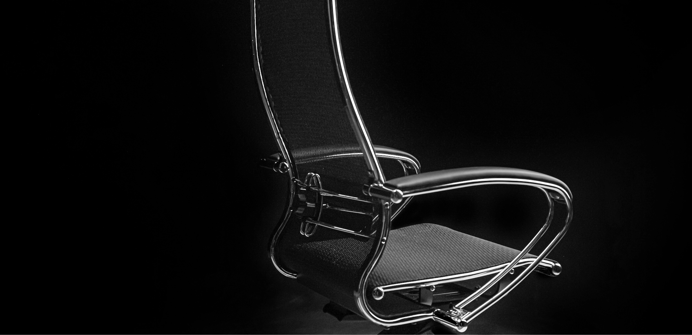
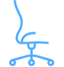

Quality
and durability
-
Comfortable ergonomic chair merges with the human body
Thanks to improved care, better ergonomics, and absence of discomforts, it increases concentration and efficiency of every day work
-
Exceptional properties
Solid steel frame, ergonomics leaving nothing to be desired, environmentally friendly upholstery fabrics, and much more
-
Reasonable prices for office chairs
A full-cycle privately owned production facility enables us to purchase quality items for the most favorable price
-

Unique design answering every modern trend
The scientific approach and the commitment to the highest comfort level created this exceptional «golden ratio» chair
HOME
OFFICE
Armchairs will add coziness to your home office with their comfort and sophisticated design.
DIRECTOR
CHAIR
Premium appearance and comfort will allow you to be rested even during working hours.
MEETING
ROOM
Enjoy the speaker’s speech in a simple, but at the same time comfortable chair.
GUARANTEES
Lifetime Warranty for steel frame
Bearing steel frame, all the chair components are attached to, increases its robustness and durability5 years on the chair
5 years on the chair
Gas lifts for Metta chairs are purchased from the world-leading manufacturer, certified in operation safety according to European standards by the German certification company TUVRheinlandGroup
5 years on upholstery fabrics
High-quality wear-resistant and eco-friendly upholstery fabrics, NewLeater are reinforced with nylon thread and have a stringy natural base, that’s no less practical than genuine leather in plasticity, durability, and endurance. Perforation provides unique airing qualities far exceeding those of genuine leather. Upholstery fiber with increased air passage and of modern look and comfort includes a “fishnet” fabric armed with aramid fibers of incredible strength and endurance levels